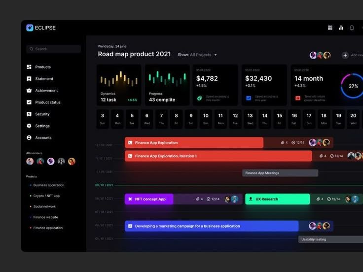

Total de tareas
124
+12 este mes
Organiza, asigna y da seguimiento al trabajo de tu equipo
124
+12 este mes
67
54.0% del total
38
30.6% del total
18
12.6% del total
2
1.6% del total
5
6.5% del total
Implementar controles, cola y biblioteca de audio
Validar carrito, pagos y confirmación de compra
Definir disponibilidad, tarifas y estados de limpieza
Organizar listas, responsables y actualización en tiempo real

App worklistConectar fechas, ocupación y confirmación del huésped
Definir reglas, dependencias y alertas de vencimiento
Conservamos los datos disponibles.